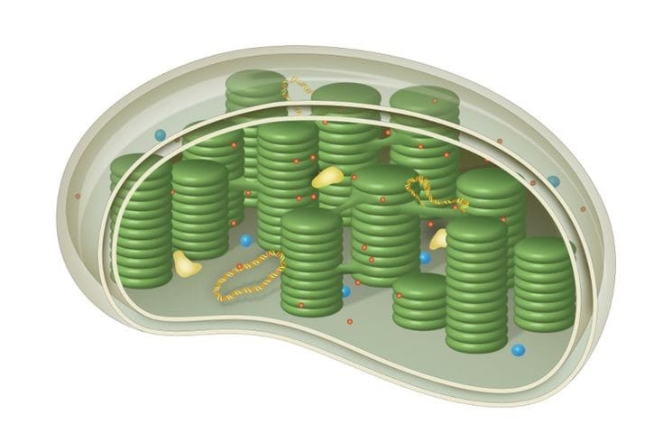
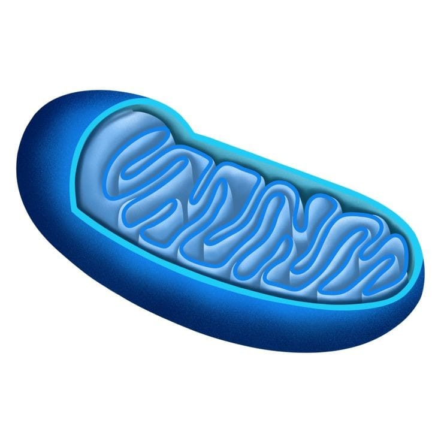

Cloroplasto
Os cloroplastos são organelas responsáveis pela fotossíntese, o processo pelo qual as plantas convertem luz solar em energia química. Eles contêm clorofila, o pigmento que dá a cor verde às plantas.Aqui estão algumas características importantes: Estrutura: Os cloroplastos têm uma dupla membrana e um sistema interno de membranas chamado tilacoides, onde ocorre a fotossíntese. O espaço dentro dos tilacoides é chamado de lume. Função: A principal função dos cloroplastos é realizar a fotossíntese, convertendo dióxido de carbono e água em glicose e oxigênio usando a energia da luz solar. Localização: Elas são principalmente encontradas nas folhas das plantas onde a fotossíntese é mais importante.
Mitocôndrias
As mitocôndrias são conhecidas como as “usinas de energia” da célula porque produzem ATP (adenosina trifosfato), a principal molécula de energia usada pelas células. Aqui estão algumas características importantes: Estrutura: As mitocôndrias também têm uma dupla membrana. A membrana interna é altamente dobrada, formando cristas, que aumentam a área de superfície para a produção de ATP. Função: A principal função das mitocôndrias é realizar a respiração celular, um processo que converte glicose e oxigênio em ATP, dióxido de carbono e água. Localização: As mitocôndrias estão presentes em quase todas as células eucarióticas, incluindo as células vegetais.